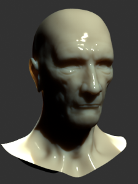

VRayFastSSS2
VRayFastSSS2 Overview
VRayFastSSS2 is a material that is primarily designed for rendering of translucent materials like skin, marble, etc. The implementation is based on the concept of BSSRDF originally introduced by Jensen et al. (see the references below) and is a more or less physically accurate approximation of the sub-surface scattering effect, while still being fast enough to be used in practice.
In difference from the original VRayFastSSS material, VRayFastSSS2 is a complete material with diffuse and specular components that can be used directly, without the need of a VRayBlendMtl material. More exactly, the material is composed of three layers: a specular layer, a diffuse layer, and a sub-surface scattering layer. The sub-surface scattering layer is comprised of single and multiple scattering components. Single scattering occurs when light bounces once inside the material. Multiple scattering results from light bouncing two or more times before leaving the material.
General Parameters
Preset - choose one of several available preset materials.
Most presets are based on measured data provided by Jensen et al. in [
3
].
Example: VRayFastSSS2 Presets
Skin Brown
Skin Pink
Skin Yellow

Milk [Skim]
Milk [Whole]
Marble [White]
Ketchup
Cream
Potato
Spectralon
Prepass Rate - VRayFastSSS2 accelerates the calculation of multiple scattering by precomputing the lighting at different points on the surface of the object and storing them in a structure called an illumination map, which is similar to the irradiance map used to approximate global illumination, and uses the same prepass mechanism built into V-Ray that is also used for e.g. interpolated glossy reflections/refractions. This parameter determines the resolution at which surface lighting is computed during the prepass phase. A value of 0 means that the prepass will be at the final image resolution; a value of -1 means half the image resolution, and so on. For high quality renders, it is recommended to set this to 0 or higher, as lower values may cause artifacts or flickering in animations. If the chosen prepass rate is not sufficient to approximate the multiple scattering effect adequately, VRayFastSSS2 will replace it with a simple diffuse term. This can happen, for example, for objects that are very far away from the camera, or if the subsurface scattering effect is very small. This simplification is controlled by the Prepass Blur parameter.
Example: Prepass Rate
This example shows the effect of the Prepass rate parameter. To better show the effect, the Prepass blur parameter is set to 0.0 for these images, so that VRayFastSSS2 does not replace the sub-surface component with diffuse shading when there are not enough samples. Note how low values of the Prepass rate reduce render times but produce blocky artifacts in the image. Also note that more translucent objects can do with lower Prepass rate values, since the lighting is blurred anyways. In the examples below, when Scatter radius is 4.0 cm, the image looks fine even with Prepass rate of -1, whereas the at this rate, when Scatter radius is 1.0 cm, there are still visible artifacts.
Prepass = -3
Scatter Radius = 1cm
Prepass = -1
Scatter Radius = 1cm

Prepass = 0
Scatter Radius = 1cm
Prepass = 1
Scatter Radius = 1cm
Prepass = -3
Scatter Radius = 4cm
Prepass = -1
Scatter Radius = 4cm
Prepass = 0
Scatter Radius = 4cm
Prepass = 1
Scatter Radius = 4cm
Prepass ID - this option allows several VRayFastSSS2 materials to share the same illumination map. This could be useful if you have different VRayFastSSS2 materials applied on the same object - either through a Multi/Sub-Object material, or inside a VRayBlendMtl material. If the Prepass ID is 0, then the material will compute its own local illumination map. If this is greater than 0, then all materials with the specified ID will share the same map.
Scale - additionally scales the subsurface scattering radius. Normally, VRayFastSSS2 will take the scene units into account when calculating the subsurface scattering effect. However, if the scene was not modeled to scale, this parameter can be used to adjust the effect. It can also be used to modify the effect of the presets, which reset the Scatter radius parameter when loaded, but leave the Scale parameter unchanged.
Example: Scale
This example shows the effect of the Scale parameter. Note how larger values make the object appear more translucent. In its effect, this parameter does essentially the same thing as the Scatter radius parameter, but it can be adjusted independently of the chosen preset. The images are rendered without GI to better show the sub-surface scattering. The Single scatter parameter was set to Raytraced (solid). The Marble (white) preset was used for all images.
Scale = 1
Scale = 10
Scale = 100
IOR - the index of refraction for the material. Most water-based materials like skin have IOR of about 1.3.
Diffuse and Sub-Surface Scattering Layers Parameters
Overall Color - controls the overall coloration for the material. This color serves as a filter for both the diffuse and the sub-surface component.
Diffuse Color - the color of the diffuse portion of the material.
Diffuse Amount - the amount for the diffuse component of the material. Note that this value in fact blends between the diffuse and sub-surface layers. When set to 0.0, the material does not have a diffuse component. When set to 1.0, the material has only a diffuse component, without a sub-surface layer. The diffuse layer can be used to simulate dust etc. on the surface.
Sub Surface Color - the general color for the sub-surface portion of the material.
Scatter Color - the internal scattering color for the material. Brighter colors cause the material to scatter more light and to appear more translucent; darker colors cause the material to look more diffuse-like.
Example: Sub Surface Color
Note: the "happy buddha" model is from the Stanford scanning repository ( http://graphics.stanford.edu/data/3Dscanrep/ ).
This example and the next demonstrate the effect of and the relation between the Scatter color and the Sub-surface color parameters. Note how changing the Sub-surface color changes the overall appearance of the material, whereas changing the Scatter color only modifies the internal scattering component.
The Scatter color is set to green.
Sub Surface Color = Red
Sub Surface Color = Green
Sub Surface Color = Blue
Note: The "Happy Buddha" model is from the Stanford scanning repository (http://graphics.stanford.edu/data/3Dscanrep/).
Scatter Radius - controls the amount of light scattering in the material. Smaller values cause the material to scatter less light and to appear more diffuse-like; higher values make the material more translucent. Note that this value is specified always in centimeters (cm); the material will automatically take care to convert it into scene units based on the currently selected system units.
Example: Scatter Radius
This example shows the effect of the Scatter radius parameter. Note that the effect is the same as increasing the Scale parameter, but the difference is that the Scatter radius is modified directly by the different presets.
This set of images is based on the Milk (skimmed) preset.
The cube in the lower left corner has a size of 1cm.
Scatter Radius = 1.0cm
Scatter Radius = 2.0cm
Scatter Radius = 4.0cm
Note: The "Happy Buddha" model is from the Stanford scanning repository (http://graphics.stanford.edu/data/3Dscanrep/).
Phase Function - a value between -1.0 and 1.0 that determines the general way light scatters inside the material. Its effect can be somewhat likened to the difference between diffuse and glossy reflections from a surface, however the phase function controls the reflection and transmittance of a volume. A value of 0.0 means that light scatters uniformly in all directions (isotropic scattering); positive values mean that light scatters predominantly forward in the same direction as it comes from; negative values mean that light scatters mostly backward. Most water-based materials (e.g. skin, milk) exhibit strong forward scattering, while hard materials like marble exhibit backward scattering. This parameter affects most strongly the single scattering component of the material. Positive values reduce the visible effect of single scattering component, while negative values make the single scattering component generally more prominent.
Example: Phase Function
This example shows the effect of the Phase function parameter. This parameter can be likened to the difference between diffuse reflection and glossy reflection on a surface; however it controls the reflectance and transmittance of a volume. Its effect is quite subtle and mainly related to the single scattering component of the material.
The red arrow represents a ray of light going through the volume; the black arrows represent possible scattering directions for the ray.
Phase Function = -0.9 (Backward Scattering)
More light comes out.

Phase Function = -0.5 (Backward Scattering)
Phase Function = 0 (Isotropic Scattering)
More light exits object.
Phase Function = 0 (Isotropic Scattering)
Phase Function = 0.0 (Forward Scattering)
More light is absorbed object.

Phase Function = 0.5 (Forward Scattering)
Note: The "Happy Buddha" model is from the Stanford scanning repository (http://graphics.stanford.edu/data/3Dscanrep/).
Example: Phase Function: Light Source
This example demonstrates the effect of the Phase function parameter when there is a light source inside the volume. The images are based on the Skin (pink) preset with large Scatter radius and Raytraced (refractive) mode for single scattering with IOR set to 1.0. Front lighting and Back lighting are disabled for these images; only single scattering is visible. Note the volumetric shadows cast by the light inside the volume.
Phase Function = -0.9
Phase Function = 0
Phase Function = 0.0
Specular Layer Parameters
Specular Color - determines the specular color for the material.
Specular Amount - determines the specular amount for the material. Note that there is an automatic Fresnel falloff applied to the specular component, based on the IOR of the material.
Specular Glossiness - determines the glossiness (highlights shape). A value of 1.0 produces sharp reflections, lower values produce more blurred reflections and highlights.
Specular Subdivs - determines the number of samples that will be used to calculate glossy reflections. Lower values render faster, but may produce noise in the glossy reflections. Higher values reduce the noise, but may be slower to calculate.
Specular Reflections - enables the calculations of glossy reflections. When off, only highlights will be calculated.
Specular Trace Depth - the number of reflection bounces for the material.
Options
single scatter - controls how the single scattering component is calculated:
-
None - no single scattering component is calculated.
-
Simple - the single scattering component is approximated from the surface lighting. This option is useful for relatively opaque materials like skin, where light penetration is normally limited.
-
Raytraced (Solid) - the single scattering component is accurately calculated by sampling the volume inside the object. Only the volume is raytraced; no refraction rays on the other side of the object are traced. This is useful for highly translucent materials like marble or milk, which at the same time are relatively opaque.
-
Raytraced (refractive) - similar to the Raytraced (Solid) mode, but in addition refraction rays are traced. This option is useful for transparent materials like water or glass. In this mode, the material will also produce transparent shadows.
Example: Single Scatter Mode
This example shows the effect of the Single scatter mode parameter.
For relatively opaque materials, the different Single scatter modes produce quite similar results (except for render times). In the following set of images, the Scatter radius is set to 0.5 cm.
In the second set of images, the Scatter radius is set to 50.0 cm. In this case, the material is quite transparent, and the difference between the different Single scatter modes is apparent. Note also the transparent shadows with the Raytraced (refractive) mode.

Single Scatter = Simple
Single Scatter = Ray Traced Solid
Single Scatter = Ray Traced Refractive
Single Scatter = Simple
Single Scatter = Ray Traced Solid
Single Scatter = Ray Traced Refractive
Note: The "Happy Buddha" model is from the Stanford scanning repository (http://graphics.stanford.edu/data/3Dscanrep/).
Single Scatter Subdivs - determines the number of samples to make when evaluating the single scattering component when the Single Scatter mode is set to Raytraced (Solid) or Raytraced (Refractive) .
Refraction Depth - this determines the depth of refraction rays when the Single Scatter parameter is set to Raytraced (Refractive) mode.
Front Lighting - enables the multiple scattering component for light that falls on the same side of the object as the camera.
Back Lighting - enables the multiple scattering component for light that falls on the opposite side of the object as the camera. If the material is relatively opaque, turning this off will speed up the rendering.
Scatter GI - controls whether the material will accurately scatter global illumination. When off, the global illumination is calculated using a simple diffuse approximation on top of the sub-surface scattering. When on, the global illumination is included as part of the surface illumination map for multiple scattering. This is more accurate, especially for highly translucent materials, but may slow down the rendering quite a bit.
Prepass Blur - controls if the material will use a simplified diffuse version of the multiple scattering when the prepass rate for the direct lighting map is too low to adequately approximate it. A value of 0.0 will cause the material to always use the illumination map. However, for objects that are far away from the camera, this may lead to artifacts or flickering in animations. Larger values control the minimum required samples from the illumination map in order to use it for approximating multiple scattering.
Cutoff Threshold - this is a threshold below which specular reflections will not be traced. V-Ray tries to estimate the contribution of specular reflections to the image, and if it is below this threshold, the effect is not computed. Do not set this to 0.0 as it may cause excessively long render times in some cases.
Prepass Mode - this parameter allow the user to select the way the illumination map (prepass) is (re)used.
Single Frame - when this mode is enabled, V-Ray will calculate a new illumination map for each rendering.
Single Frame (Autosave) - when this mode is enabled, V-Ray will calculate a new illumination map and save it in a file specified in Prepass FileName.
From File - when this mode is enabled V-Ray is not going to calculate a new illumination map. Instead it will use the map specified in Prepass FileName to render the image.
Prepass FileName - specifies the file name of the illumination map to be saved in or read from.
Notes
-
When using either Raytraced (solid) or Raytraced (refractive) mode for the Single scatter parameter, you need to use VRayShadows for standard lights in order to get correct results.
-
VRayFastSSS2 uses the V-Ray prepass system to simulate and interpolate the sub-surface scattering. During other GI calculations (e.g. light cache or photon mapping), the material is calculated as a diffuse one.
-
For the reason explained above, VRayFastSSS2 will render as a diffuse one with the progressive path tracing mode of the light cache.
-
You can layer several VRayFastSSS2 materials using a VRayBlendMtl material in order to recreate more complex sub-surface scattering effects. In this case, any raytraced single scattering will only be calculated for the base material, but multiple scattering, reflections, etc. will work correctly for any layer. It might be helpful to use the Prepass ID parameter to make the materials share the same illumination map, so that some of the calculations are reused.
Reference
Here is a list of links and references used when building the VRayFastSSS2 material.
-
H. C. Hege, T. Hollerer, and D. Stalling, Volume Rendering: Mathematical Models and Algorithmic aspects. An online version can be found at http://www.cs.ucsb.edu/~holl/publications.html Defines the basic quantities involved in volumetric rendering and derives the volumetric and surface rendering equations.
-
T. Farrell, M. Patterson, and B. Wilson, A Diffusion Theory Model of Spatially Resolved, Steady-state Diffuse Reflectance for the Noninvasive Determination of Tissue Optical Properties in vivo, Med. Phys. 19(4), Jul/Aug 1992. Describes an application of the diffusion theory to the simulation of sub-surface scattering; derives the base formulas for the dipole approximation used by Jensen et al. (see below).
-
H. Jensen, S. Marschner, M. Levoy, and P. Hanrahan, A Practical Model for Subsurface Light Transport , SIGGRAPH'01: Computer Graphics Proceedings, pp. 511-518. An online version of this paper can be found at http://www-graphics.stanford.edu/papers/bssrdf/ Introduces the concept of BSSRDF and describes a practial method for calculating sub-surface scattering based on the dipole approximation derived by Farrell et al. (see above).
-
H. Jensen and J. Buhler, A Rapid Hierarchical Rendering Technique for Translucent Materials , SIGGRAPH'02: Computer Graphics Proceedings, pp. 576-581. An online version of this paper can be found at http://graphics.ucsd.edu/~henrik/papers/fast_bssrdf/ Introduces the idea of decoupling the calculations of surface illumination and the sub-surface scattering effect in a two-pass method; describes a fast hierarchical approach for evaluating subsurface scattering and proposes a reparametrization of the BSSRDF parameters for easier user adjustment.
-
C. Donner and H. Jensen, Light Diffusion in Multi-Layered Translucent Materials , SIGGRAPH'05: ACM SIGGRAPH 2005 Papers, pp. 1032-1039. An online version of this paper can be found at http://graphics.ucsd.edu/papers/layered/ Provides a concise description of the original BSSRDF solution method presented by Jensen et al; extends the model to multi-layered materials and thin slabs using multipole approximation.
Artist Examples
Image Credit: Shang-leng Peng
Image Credit:
Image Credit: Adam Lewis
Image Credit: Adam Lewis

Image Credit: Andrew Hakim Lee